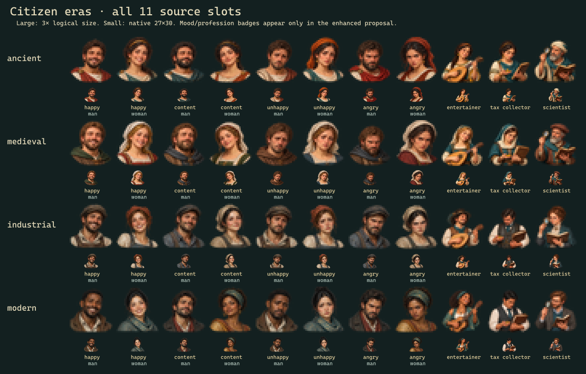
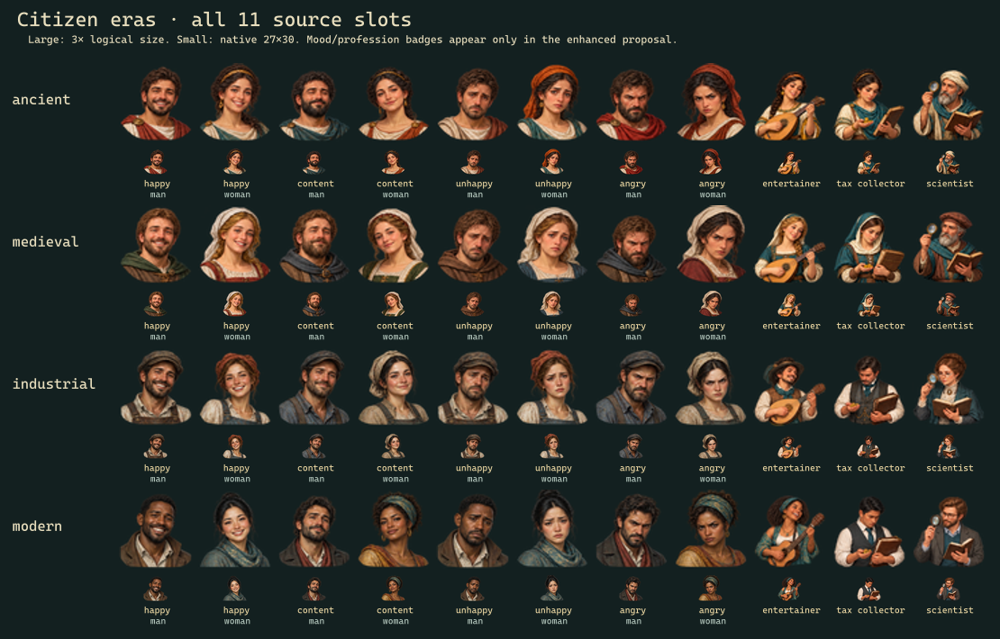
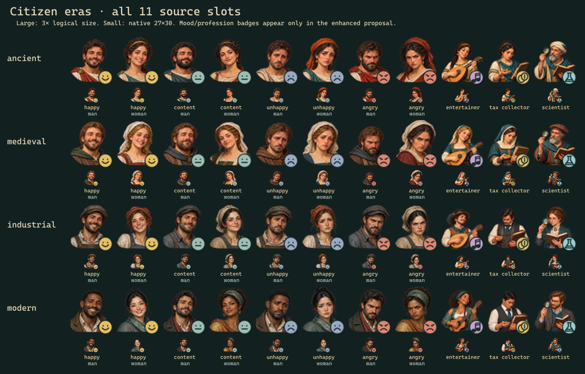

The source chooses 11 slots per era: happy, content, unhappy and angry male/female pairs, then entertainer, tax collector and scientist. Ordinary citizens alternate continuously across mood groups; specialists do not alternate.
Era thresholds: ancient by default; Invention + Philosophy; Industrialization; Electronics + Automobile. Era is based on technology, not the calendar year. Native and HD-only use the same portraits and logical frames. Enhanced adds small shape-distinct mood and profession cues.



Original pixels stay in the ignored original-local folder. This is an artwork/renderer review; no game source changes are included. Validation · Sprite bindings and source references